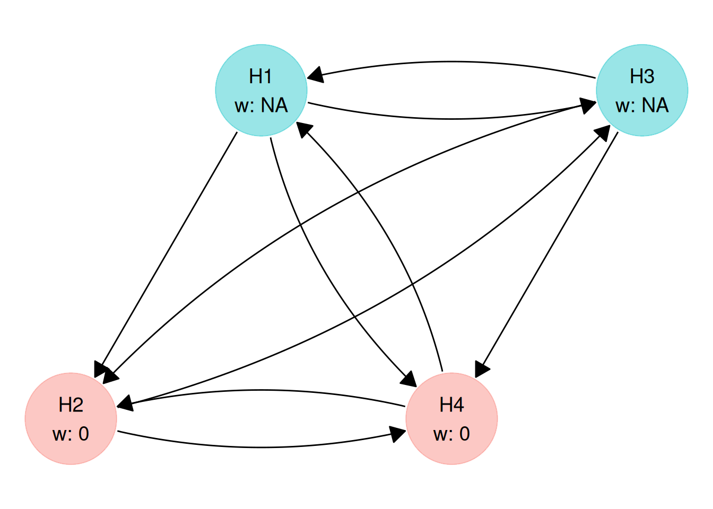
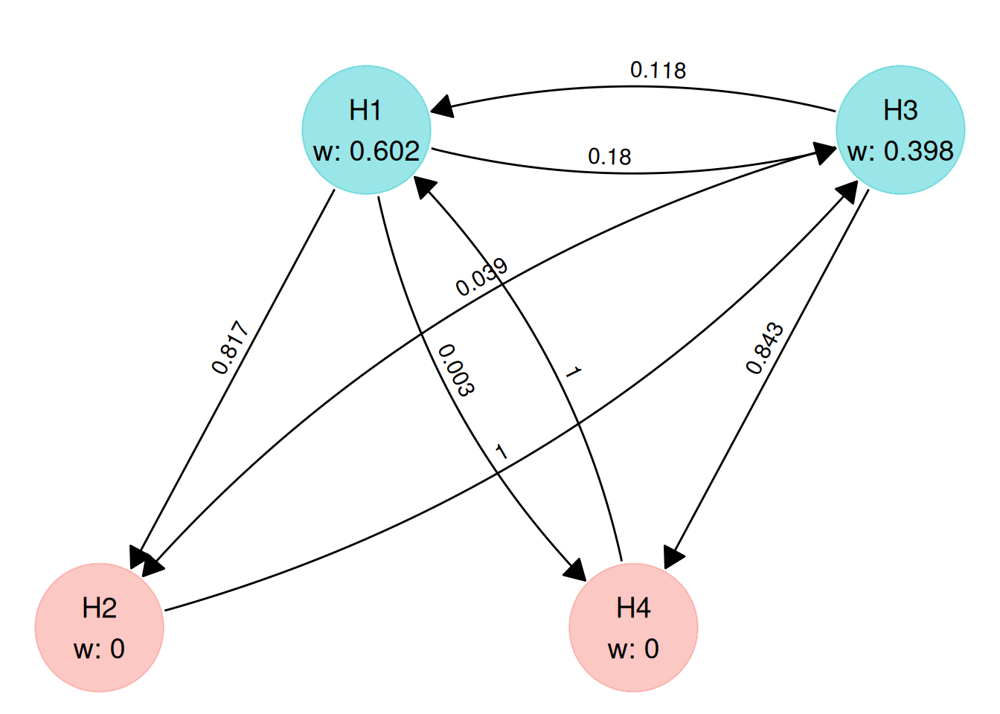
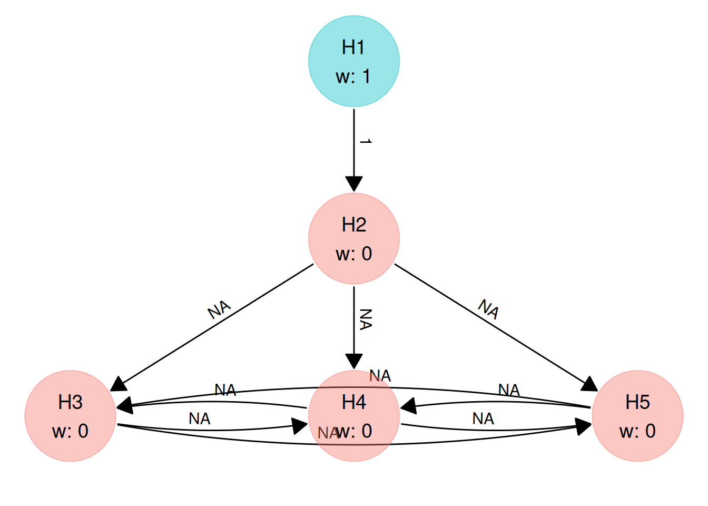
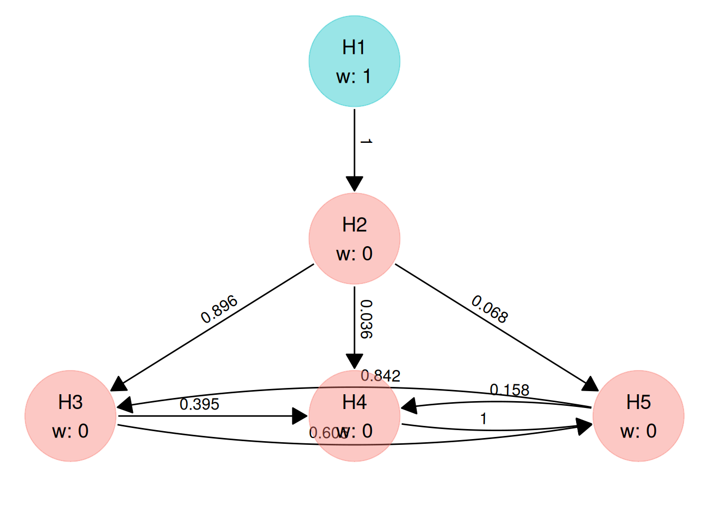

disjunctive <- trial_success(r1 || r2 || r3 || r4)
conjunctive <- trial_success(r1 && r2 && r3 && r4)
exp_rejections <- trial_success(r1 + r2 + r3 + r4)
average <- trial_success(0.25 * (r1 + r2 + r3 + r4))
weighted <- trial_success(0.4 * r1 + 0.3 * r2 + 0.2 * r3 + 0.1 * r4)Overview
When a graphical multiple testing procedure is applied to the -values from a clinical trial with null hypotheses , it produces a binary rejection pattern
where if is rejected and otherwise. Because every valid graph controls the familywise error rate strongly at level , the choice between candidate graphs can be based on the clinical, regulatory, and commercial value of the claims they make.
A trial success function assigns a non-negative numerical score to each of the possible rejection patterns. In Spiers et al. (2026), is referred to as a gain function, and its expected value under an assumed joint distribution of test statistics is called the expected gain:
Given a matrix of simulated -values pvals with rows (simulated trials) and columns (hypotheses), multigrain estimates by evaluating the graphical testing procedure on every row of pvals to obtain an logical rejection matrix and averaging across the rows. graph_optimise() searches over the graphs permitted by a graph_constraint() object to find the parameter values that maximise this expected value.
Two properties follow from the definition of :
- Separation of value and probability: The probability of each rejection pattern is determined by the simulated -values and the graph. The trial success function should therefore specify only how valuable each outcome would be if it occurred. Reducing the weight assigned to a hypothesis in because that hypothesis has low nominal power penalises its low probability twice.
- Scale invariance: Multiplying by a positive constant rescales by the same constant without changing which graph maximises it. The trial success function does not need to lie in , though scaling so that allows the expected gain to be read as a proportion of the value of rejecting all hypotheses.
Creating a trial success function
The function trial_success() takes an algebraic/logical expression in the rejection indicators r1, r2, …, rm and compiles it to C++ via Rcpp so that it can be evaluated rapidly during numerical optimisation. The number of hypotheses is inferred from the largest index referenced in the expression.
Standard power criteria
Standard multiple-testing power summaries are special cases of trial success functions:
| Criterion |
trial_success() expression () |
|
|---|---|---|
| Disjunctive power | r1 || r2 || r3 || r4 |
|
| Conjunctive power | r1 && r2 && r3 && r4 |
|
| Expected number of rejections | r1 + r2 + r3 + r4 |
|
| Average power | 0.25 * (r1 + r2 + r3 + r4) |
|
| Weighted power | 0.4 * r1 + 0.3 * r2 + 0.2 * r3 + 0.1 * r4 |
calc_power_pvals() reports marginal (local) power, disjunctive power, conjunctive power, and the expected number of rejections for any graph automatically, so you only need to construct these with trial_success() when passing them as the objective to graph_optimise().
Inspecting and evaluating a multigrain_trial_success object
A multigrain_trial_success object stores the compiled function in $func, the number of hypotheses in $m, and the deparsed expression string in $objective:
average
#> <multigrain_trial_success>
#> 0.25 * (r1 + r2 + r3 + r4)
average$m
#> [1] 4$func takes a logical matrix of rejection indicators with columns and returns the mean of across its rows:
Notice that exp_rejections$func(rej) returns approximately 2.4 rather than 0.6: it computes the expected number of rejections across the four hypotheses (), whereas average$func(rej) divides by to return average power.
Because $func accepts any logical matrix, you can also pass a single-row matrix (or iterate over rows of expand.grid()) to verify the value of on specific rejection patterns before running an optimisation:
Expression syntax and type rules
An expression passed to trial_success() can contain the following elements:
| Element | Meaning | Result type |
|---|---|---|
r1, r2, …, rm
|
Rejection indicators for | Boolean |
&& (or and), || (or or) |
Logical AND and OR between boolean terms | Boolean |
* between two boolean terms |
Product of boolean terms (equivalent to &&) |
Boolean |
+, -, *, / with numeric terms |
Standard arithmetic operations | Numeric |
| Numeric literals | Constants (e.g. 0.5, 2) |
Numeric |
( ) |
Grouping | Preserves inner type |
Two parsing rules are important when writing compound expressions:
-
Parenthesise around
&&and||: Internally,trial_success()replaces&&and||with custom infix operators (%AND%and%OR%) before parsing the R expression into an abstract syntax tree. In R, custom%...%operators have equal precedence and are evaluated from left to right, unlike standard&&and||where&&binds more tightly than||. Always place explicit parentheses around&&and||sub-expressions, writing(r1 && r2) || (r3 && r4)rather thanr1 && r2 || r3 && r4. -
Boolean versus numeric terms: The logical operators
&&and||are translated toA * Bandstd::min(1.0, A + B)in C++. Becausestd::min(1.0, A + B)only represents logical OR whenAandBtake values in ,trial_success()tracks whether each sub-expression is boolean ({0, 1}) or numeric, and requires both operands of&&and||to be boolean.
These rules govern how common patterns are written:
# Secondary hypotheses H2 and H3 count only if primary H1 is rejected:
# combine the boolean r1 with the numeric bracket using *
gated <- trial_success(r1 * (0.6 + 0.2 * r2 + 0.2 * r3))
# H1 rejected and H2 not rejected: (1 - r2) is numeric, so combine with *
h1_not_h2 <- trial_success(r1 * (1 - r2))
# At least two of three hypotheses rejected: list the pairs explicitly
two_of_three <- trial_success((r1 && r2) || (r1 && r3) || (r2 && r3))Passing a numeric sub-expression to || or &&, or using comparison operators such as >=, produces an error at compilation time:
# (r1 + r2) is numeric, so it cannot be an operand of ||
trial_success((r1 + r2) || r3)
#> Error:
#> ! `||` (OR) only allowed between booleans.
# Comparison operators are not supported; write out the logical condition instead
trial_success(r1 + r2 >= 1)
#> Error in `validate_expr_symbols()`:
#> ! Unsupported operator or function `>=` in the trial success expression.
#> ℹ Only arithmetic (`+`, `-`, `*`, `/`), logical (`&&`, `||`), and parentheses
#> are allowed.Injecting values from R with !!
Because trial_success() captures its objective argument as an unevaluated expression, any symbol other than r1, r2, ... is rejected unless it is unquoted using rlang’s injection operator !!:
v_primary <- 0.6
trial_success(r1 * (!!v_primary + 0.4 * r2))
#> <multigrain_trial_success>
#> r1 * (0.6 + 0.4 * r2)When an expression involves several computed weights, you can also construct the complete expression as a character string (for example with sprintf()) and inject the string with !!:
expr_str <- sprintf("r1 * (%.2f + %.2f * r2)", v_primary, 1 - v_primary)
trial_success(!!expr_str)
#> <multigrain_trial_success>
#> r1 * (0.60 + 0.40 * r2)Step-functions for regulatory success
Standard power criteria such as average or weighted power assign credit to each rejected hypothesis regardless of which other hypotheses are rejected. In confirmatory trials, however, regulatory approval typically depends on clearing a specific combination of primary or co-primary hypotheses.
When the sole objective of the multiplicity procedure is to maximise the probability of achieving regulatory approval (or a specific composite milestone), the trial success function is a binary step-function
which equals 1 if the rejection pattern satisfies the regulatory success condition and 0 otherwise. For any binary step-function, the expected gain is the probability of achieving regulatory success.
Common regulatory success conditions and their trial_success() expressions are shown below:
| Regulatory requirement |
trial_success() expression |
|
|---|---|---|
| Single primary endpoint () | r1 |
|
| Two co-primary endpoints ( and both required) | r1 && r2 |
|
| Two primary endpoints (either or sufficient) | r1 || r2 |
|
| Co-primary endpoints met for at least one of two doses | (r1 && r2) || (r3 && r4) |
Worked example: co-primary endpoints across two doses (FIBRONEER-ILD)
This example reproduces Example 2 of Spiers et al. (2026), which is motivated by the FIBRONEER-ILD trial of nerandomilast in patients with progressive pulmonary fibrosis (Maher et al., 2025). Patients are randomised equally () to a high dose, a low dose, or placebo. Each active dose is compared with placebo on two endpoints: change in forced vital capacity (FVC, a continuous endpoint) and a binary composite clinical outcome (time to first acute exacerbation, respiratory hospitalisation, or death). This yields hypotheses:
| Hypothesis | Dose comparison | Endpoint | Standardised effect |
|---|---|---|---|
| High dose vs. placebo | FVC | 0.250 | |
| High dose vs. placebo | Composite | 0.150 | |
| Low dose vs. placebo | FVC | 0.230 | |
| Low dose vs. placebo | Composite | 0.145 |
Defining the step-function for trial success
Suppose that regulatory approval for a given dose requires statistically significant results on both FVC and the composite endpoint for that dose, and that the sponsor intends to market a single dose strength. Succeeding on at least one dose is therefore both necessary and sufficient for trial success, giving the binary step-function
We define this trial success function in multigrain using (r1 && r2) || (r3 && r4) and verify its values across all rejection patterns:
win <- trial_success((r1 && r2) || (r3 && r4))
win
#> <multigrain_trial_success>
#> (r1 && r2) || (r3 && r4)
patterns <- as.matrix(expand.grid(
r1 = c(FALSE, TRUE),
r2 = c(FALSE, TRUE),
r3 = c(FALSE, TRUE),
r4 = c(FALSE, TRUE)
))
pattern_df <- as.data.frame(1L * patterns)
pattern_df$psi <- apply(
patterns, 1,
function(row) win$func(matrix(row, nrow = 1))
)
knitr::kable(pattern_df)| r1 | r2 | r3 | r4 | psi |
|---|---|---|---|---|
| 0 | 0 | 0 | 0 | 0 |
| 1 | 0 | 0 | 0 | 0 |
| 0 | 1 | 0 | 0 | 0 |
| 1 | 1 | 0 | 0 | 1 |
| 0 | 0 | 1 | 0 | 0 |
| 1 | 0 | 1 | 0 | 0 |
| 0 | 1 | 1 | 0 | 0 |
| 1 | 1 | 1 | 0 | 1 |
| 0 | 0 | 0 | 1 | 0 |
| 1 | 0 | 0 | 1 | 0 |
| 0 | 1 | 0 | 1 | 0 |
| 1 | 1 | 0 | 1 | 1 |
| 0 | 0 | 1 | 1 | 1 |
| 1 | 0 | 1 | 1 | 1 |
| 0 | 1 | 1 | 1 | 1 |
| 1 | 1 | 1 | 1 | 1 |
Statistical assumptions and graph constraints
With patients per arm ( patients in total) and one-sided , the non-centrality parameter for hypothesis is . The correlation between test statistics is assumed to be between the two endpoints within the same dose, between the two doses on the same endpoint, and between different endpoints across different doses:
alpha <- 0.025
n_per_arm <- 360
delta <- c(0.250, 0.150, 0.230, 0.145)
ncp_dose <- delta * sqrt(n_per_arm)
corr_dose <- matrix(
c(
1.0, 0.4, 0.5, 0.2,
0.4, 1.0, 0.2, 0.5,
0.5, 0.2, 1.0, 0.4,
0.2, 0.5, 0.4, 1.0
),
nrow = 4,
byrow = TRUE
)
# Convert non-centrality parameters to nominal per-hypothesis power
power_dose <- pnorm(ncp_dose - qnorm(1 - alpha))
round(power_dose, 3)
#> [1] 0.997 0.812 0.992 0.786The graph constraints reflect the endpoint hierarchy within each dose: all initial is allocated to the two FVC hypotheses (), and neither composite hypothesis is permitted to pass directly back to the FVC hypothesis of its own dose (). All remaining weights and transition entries are left free (NA) to be optimised:
gc_dose <- graph_constraint(
hyp_constraint = c(NA, 0, NA, 0),
trans_constraint = matrix(
c(
0, NA, NA, NA,
0, 0, NA, NA,
NA, NA, 0, NA,
NA, NA, 0, 0
),
nrow = 4,
byrow = TRUE
)
)
plot(gc_dose)
Optimising the graph
We simulate trials with simulate_pvalues() and pass win and gc_dose to graph_optimise():
set.seed(2026)
pvals_dose <- simulate_pvalues(
power_nominal = power_dose,
alpha = alpha,
corr_matrix = corr_dose,
nsim = 1e6
)
ctrl <- multigrain_control() |>
control_nsim_global(1e5) |>
control_global(run = 1000)
graph_dose <- graph_optimise(
pvals = pvals_dose,
graph_constraint = gc_dose,
trial_success = win,
alpha = alpha,
control = ctrl,
num_threads = 4
)
graph_dose
#> <multigrain_graph_optimal>
#> Optimal graph found (given user-defined constraints on graph and computational resources):
#>
#> Hypothesis weights:
#> H1 H2 H3 H4
#> 0.6024 0.0000 0.3976 0.0000
#>
#> Transition matrix:
#> H1 H2 H3 H4
#> H1 0.000 0.8172 0.1799 0.0029
#> H2 0.000 0.0000 1.0000 0.0000
#> H3 0.118 0.0391 0.0000 0.8429
#> H4 1.000 0.0000 0.0000 0.0000
#>
#> Trial success function:
#> (r1 && r2) || (r3 && r4)
#>
#> Value of trial success measure:
#> 0.85
plot(graph_dose, digits = 3)
The optimised graph splits the initial between the two FVC hypotheses ( on the high dose and on the low dose) and routes the transition weights around a single cycle: . Under this structure, rejecting the FVC hypothesis for a dose passes all of its to the composite endpoint for that same dose (directly targeting the pair or needed for the step-function to reach 1), and once both endpoints for one dose are rejected, the entire transfers to the FVC hypothesis of the other dose.
Comparing against conventional procedures
Because graph_optimise() selects the weights that maximise on pvals_dose, evaluating the optimised graph on the same simulated matrix is subject to selection optimism. To compare candidate procedures without bias, we generate an independent matrix pvals_dose_new of simulated trials and evaluate the optimised graph alongside a fixed-sequence procedure () and a Bonferroni-Holm procedure using calc_power_pvals():
set.seed(20261)
pvals_dose_new <- simulate_pvalues(
power_nominal = power_dose,
alpha = alpha,
corr_matrix = corr_dose,
nsim = 1e6
)
# Fixed sequence: H1 -> H2 -> H3 -> H4
w_seq4 <- c(1, 0, 0, 0)
G_seq4 <- matrix(
c(
0, 1, 0, 0,
0, 0, 1, 0,
0, 0, 0, 1,
0, 0, 0, 0
),
nrow = 4,
byrow = TRUE
)
# Bonferroni-Holm on 4 hypotheses
w_holm4 <- rep(1 / 4, 4)
G_holm4 <- matrix(1 / 3, nrow = 4, ncol = 4)
diag(G_holm4) <- 0
res_dose_opt <- calc_power_pvals(
pvals_dose_new,
hyp_weight = graph_dose$hyp_weight,
trans_matrix = graph_dose$trans_matrix,
alpha = alpha,
custom_power = list(gain = win)
)
res_dose_seq <- calc_power_pvals(
pvals_dose_new,
hyp_weight = w_seq4,
trans_matrix = G_seq4,
alpha = alpha,
custom_power = list(gain = win),
sum_to_one_constraint = FALSE
)
res_dose_holm <- calc_power_pvals(
pvals_dose_new,
hyp_weight = w_holm4,
trans_matrix = G_holm4,
alpha = alpha,
custom_power = list(gain = win)
)
dose_comparison <- data.frame(
Procedure = c(
"Optimised graph",
"Fixed sequence (H1 -> H2 -> H3 -> H4)",
"Bonferroni-Holm"
),
`Expected gain` = c(
res_dose_opt$gain,
res_dose_seq$gain,
res_dose_holm$gain
),
rbind(
res_dose_opt$local_power,
res_dose_seq$local_power,
res_dose_holm$local_power
),
check.names = FALSE
)
names(dose_comparison)[3:6] <- c("H1", "H2", "H3", "H4")
knitr::kable(dose_comparison, digits = 3, row.names = FALSE)| Procedure | Expected gain | H1 | H2 | H3 | H4 |
|---|---|---|---|---|---|
| Optimised graph | 0.850 | 0.996 | 0.778 | 0.988 | 0.744 |
| Fixed sequence (H1 -> H2 -> H3 -> H4) | 0.811 | 0.997 | 0.811 | 0.806 | 0.682 |
| Bonferroni-Holm | 0.848 | 0.992 | 0.773 | 0.982 | 0.749 |
In the fixed-sequence procedure, failure to reject the high-dose composite hypothesis (which has lower nominal power than the FVC endpoints) prevents the low dose () from being tested at all, reducing the probability of succeeding on at least one dose from to .
Hurdle formulation with relative values for secondaries
In many confirmatory trials, clearing the primary regulatory requirement is necessary for drug approval, while rejecting key secondary hypotheses supports additional efficacy claims in the product label. A secondary rejection has no practical value if the primary regulatory hurdle is not met, because the treatment is not approved.
Spiers et al. (2026) represent this hierarchy using a hurdle formulation that multiplies the regulatory step-function by a base value for regulatory approval plus incremental values for the secondary hypotheses:
where:
- indicates whether the regulatory requirement for approval is met;
- is the baseline value of achieving regulatory approval alone;
- is the index set of secondary hypotheses not included in ;
- is the incremental value of the label claim supported by rejecting (), conditional on regulatory approval.
For example, when and are co-primary hypotheses and and are secondary hypotheses with and , the hurdle function is written as:
hurdle_example <- trial_success((r1 && r2) * (0.6 + 0.2 * r3 + 0.2 * r4))The additive sum assumes that each secondary claim contributes the same incremental value regardless of which other secondary hypotheses are rejected. If two secondary endpoints measure closely related clinical constructs so that the second rejection adds less value once the first has been secured, diminishing returns can be written directly using || and &&:
# Rejecting either H2 or H3 adds 0.25; rejecting both adds a further 0.15
diminishing <- trial_success(r1 * (0.6 + 0.25 * (r2 || r3) + 0.15 * (r2 && r3)))When the baseline approval value affects the optimal graph
Taking expectations of the hurdle formulation splits the expected gain into two terms:
Suppose the graph constraints allocate all initial to the primary hypotheses and prevent secondary hypotheses from being tested until the regulatory requirement has been met (for example, a single primary hypothesis with , or two co-primary hypotheses tested in a fixed sequence with ). Then the event depends only on the primary -values and has the exact same probability under every candidate graph permitted by the constraints. Consequently, the first term is a constant across the entire search space, and the optimal graph depends only on the relative secondary weights ().
By contrast, actively influences the optimal graph whenever candidate graphs can trade off the probability of regulatory approval against the probability of secondary claims, such as when:
- there are multiple routes to regulatory approval (for example, two doses or a full population and a biomarker subpopulation) that share initial ; or
- secondary hypotheses receive non-zero initial or receive recycled before all components of have been rejected.
Setting relative values from team scores
When specifying and () with a clinical, regulatory, and commercial trial team, Spiers et al. (2026) describe a structured scoring procedure that normalises :
- Score the secondary claims relative to one another: Conditional on the trial achieving regulatory approval (), assign each secondary hypothesis () a relative value score on a to scale, where represents the single most valuable secondary claim.
- Anchor the total secondary value relative to regulatory approval: If achieving regulatory approval alone has a score of , let denote the score of achieving regulatory approval together with all secondary claims in . The ratio is the combined value of all secondary claims expressed as a multiple of the value of regulatory approval alone.
- Convert to normalised weights: Setting satisfies , so that complete success across all hypotheses has value and regulatory approval alone has value .
Worked example: co-primary and key secondary endpoints (ECZTRA 3)
This example reproduces Example 3 of Spiers et al. (2026), which is based on the phase III ECZTRA 3 trial of tralokinumab plus topical corticosteroids in moderate-to-severe atopic dermatitis (Silverberg et al., 2021). The multiplicity procedure tests two co-primary endpoints () and three key secondary endpoints () at one-sided :
| Hypothesis | Endpoint | Role | Nominal power | |
|---|---|---|---|---|
| IGA 0/1 at week 16 | Co-primary | 0.90 | 3.24 | |
| EASI-75 at week 16 | Co-primary | 0.90 | 3.24 | |
| Worst daily pruritus NRS (-point improvement) | Key secondary | 0.80 | 2.80 | |
| DLQI (-point improvement) | Key secondary | 0.70 | 2.48 | |
| SCORAD (change from baseline) | Key secondary | 0.85 | 3.00 |
The clinician-assessed severity endpoints (IGA 0/1, EASI-75, and SCORAD) are assumed to have pairwise correlation , while the patient-reported outcomes (pruritus and DLQI) have correlation with each other and with the clinician-assessed endpoints.
Constructing the hurdle trial success function
Regulatory approval requires rejecting both co-primary hypotheses, so . For the three secondary endpoints , the consensus relative value scores in Spiers et al. (2026) are (pruritus), (DLQI), and (SCORAD), with anchor score (achieving all three secondary claims adds , or , to the value of regulatory approval alone):
We format the hurdle expression as a string using sprintf() and pass it to trial_success() via !!:
psi_ecztra <- sprintf(
"r1 * r2 * (%.3f + %.3f * r3 + %.3f * r4 + %.3f * r5)",
v_base, v[["H3"]], v[["H4"]], v[["H5"]]
)
psi_ecztra
#> [1] "r1 * r2 * (0.556 + 0.252 * r3 + 0.148 * r4 + 0.044 * r5)"
gain_ecztra <- trial_success(!!psi_ecztra)
gain_ecztra
#> <multigrain_trial_success>
#> r1 * r2 * (0.556 + 0.252 * r3 + 0.148 * r4 + 0.044 * r5)Under gain_ecztra, any trial that fails to reject either or receives a score of 0, rejecting and alone receives 0.556, and rejecting all five hypotheses receives 1.000.
Statistical assumptions and graph constraints
Because both and must be rejected at level before any secondary hypothesis can be claimed, testing at full () and passing its entire weight to () rejects whenever . Once is rejected, its is distributed across the secondary hypotheses , which may recycle among themselves but not back to or :
gc_ecztra <- graph_constraint(
hyp_constraint = c(1, 0, 0, 0, 0),
trans_constraint = matrix(
c(
0, 1, 0, 0, 0,
0, 0, NA, NA, NA,
0, 0, 0, NA, NA,
0, 0, NA, 0, NA,
0, 0, NA, NA, 0
),
nrow = 5,
byrow = TRUE
)
)
plot(gc_ecztra)
Because and are fixed by gc_ecztra, every permitted graph has the same probability of rejecting both co-primary hypotheses, and the optimiser chooses the nine free transition weights among to maximise the expected secondary contribution.
Optimising the graph
set.seed(2027)
pvals_ecztra <- simulate_pvalues(
power_nominal = power_ecztra,
alpha = alpha,
corr_matrix = corr_ecztra,
nsim = 1e6
)
graph_ecztra <- graph_optimise(
pvals = pvals_ecztra,
graph_constraint = gc_ecztra,
trial_success = gain_ecztra,
alpha = alpha,
control = ctrl,
num_threads = 4
)
graph_ecztra
#> <multigrain_graph_optimal>
#> Optimal graph found (given user-defined constraints on graph and computational resources):
#>
#> Hypothesis weights:
#> H1 H2 H3 H4 H5
#> 1 0 0 0 0
#>
#> Transition matrix:
#> H1 H2 H3 H4 H5
#> H1 0 1 0.0000 0.0000 0.0000
#> H2 0 0 0.8958 0.0358 0.0684
#> H3 0 0 0.0000 0.3947 0.6053
#> H4 0 0 0.0000 0.0000 1.0000
#> H5 0 0 0.8425 0.1575 0.0000
#>
#> Trial success function:
#> r1 * r2 * (0.556 + 0.252 * r3 + 0.148 * r4 + 0.044 * r5)
#>
#> Value of trial success measure:
#> 0.7742
plot(graph_ecztra, digits = 3)
In this design, the secondary hypotheses differ in the order of their relative values () and the order of their nominal powers (). Moreover, SCORAD () is strongly correlated () with the co-primary endpoints and , so conditional on and being rejected, tends to be small. The optimised graph balances these factors by sending most of ’s recycled weight to pruritus (, the highest-value secondary claim) while allocating the remainder across SCORAD () and DLQI ().
Comparing against conventional procedures
We compare the optimised graph on an independent matrix of simulated trials against three standard secondary testing strategies that share the same co-primary gate ():
- Value-ordered fixed sequence: tests the secondary hypotheses in decreasing order of clinical value ();
- Power-ordered fixed sequence: tests the secondary hypotheses in decreasing order of nominal power ();
- Bonferroni-Holm on secondaries: splits ’s weight equally ( each) across with equal recycling () among them.
set.seed(20271)
pvals_ecztra_new <- simulate_pvalues(
power_nominal = power_ecztra,
alpha = alpha,
corr_matrix = corr_ecztra,
nsim = 1e6
)
w_ecztra <- c(1, 0, 0, 0, 0)
# Value-ordered fixed sequence: H1 -> H2 -> H3 -> H4 -> H5
G_val_seq <- matrix(
c(
0, 1, 0, 0, 0,
0, 0, 1, 0, 0,
0, 0, 0, 1, 0,
0, 0, 0, 0, 1,
0, 0, 0, 0, 0
),
nrow = 5,
byrow = TRUE
)
# Power-ordered fixed sequence: H1 -> H2 -> H5 -> H3 -> H4
G_pow_seq <- matrix(
c(
0, 1, 0, 0, 0,
0, 0, 0, 0, 1,
0, 0, 0, 1, 0,
0, 0, 0, 0, 0,
0, 0, 1, 0, 0
),
nrow = 5,
byrow = TRUE
)
# Bonferroni-Holm on H3, H4, H5 after H1 -> H2
G_holm_sec <- matrix(
c(
0, 1, 0, 0, 0,
0, 0, 1 / 3, 1 / 3, 1 / 3,
0, 0, 0, 1 / 2, 1 / 2,
0, 0, 1 / 2, 0, 1 / 2,
0, 0, 1 / 2, 1 / 2, 0
),
nrow = 5,
byrow = TRUE
)
res_ecz_opt <- calc_power_pvals(
pvals_ecztra_new,
hyp_weight = graph_ecztra$hyp_weight,
trans_matrix = graph_ecztra$trans_matrix,
alpha = alpha,
custom_power = list(gain = gain_ecztra)
)
res_ecz_val <- calc_power_pvals(
pvals_ecztra_new,
hyp_weight = w_ecztra,
trans_matrix = G_val_seq,
alpha = alpha,
custom_power = list(gain = gain_ecztra),
sum_to_one_constraint = FALSE
)
res_ecz_pow <- calc_power_pvals(
pvals_ecztra_new,
hyp_weight = w_ecztra,
trans_matrix = G_pow_seq,
alpha = alpha,
custom_power = list(gain = gain_ecztra),
sum_to_one_constraint = FALSE
)
res_ecz_holm <- calc_power_pvals(
pvals_ecztra_new,
hyp_weight = w_ecztra,
trans_matrix = G_holm_sec,
alpha = alpha,
custom_power = list(gain = gain_ecztra)
)
ecztra_comparison <- data.frame(
Procedure = c(
"Optimised graph",
"Value-ordered sequence (H3 -> H4 -> H5)",
"Power-ordered sequence (H5 -> H3 -> H4)",
"Bonferroni-Holm on H3, H4, H5"
),
`Expected gain` = c(
res_ecz_opt$gain,
res_ecz_val$gain,
res_ecz_pow$gain,
res_ecz_holm$gain
),
rbind(
res_ecz_opt$local_power[3:5],
res_ecz_val$local_power[3:5],
res_ecz_pow$local_power[3:5],
res_ecz_holm$local_power[3:5]
),
check.names = FALSE
)
names(ecztra_comparison)[3:5] <- c("H3", "H4", "H5")
knitr::kable(ecztra_comparison, digits = 3, row.names = FALSE)| Procedure | Expected gain | H3 | H4 | H5 |
|---|---|---|---|---|
| Optimised graph | 0.775 | 0.719 | 0.579 | 0.719 |
| Value-ordered sequence (H3 -> H4 -> H5) | 0.770 | 0.726 | 0.580 | 0.558 |
| Power-ordered sequence (H5 -> H3 -> H4) | 0.768 | 0.689 | 0.558 | 0.799 |
| Bonferroni-Holm on H3, H4, H5 | 0.770 | 0.679 | 0.608 | 0.750 |
The optimised graph achieves the highest expected gain (), retaining nearly the same local power on the high-value pruritus endpoint () as the value-ordered sequence while substantially increasing power on SCORAD () and DLQI () when an earlier secondary hypothesis fails to reject.
References
Bretz, F., Maurer, W., Brannath, W., and Posch, M. (2009). A graphical approach to sequentially rejective multiple test procedures. Statistics in Medicine, 28(4), 586–604. https://doi.org/10.1002/sim.3495
Maher, T. M., et al. (2025). Nerandomilast in patients with progressive pulmonary fibrosis. New England Journal of Medicine, 392(22), 2203–2214. https://doi.org/10.1056/NEJMoa2503643
Silverberg, J. I., et al. (2021). Tralokinumab plus topical corticosteroids for the treatment of moderate-to-severe atopic dermatitis: results from the double-blind, randomized, multicentre, placebo-controlled phase III ECZTRA 3 trial. British Journal of Dermatology, 184(3), 450–463.
Spiers, A. D. V., Grayling, M. J., Wheeler, G. M., and Mander, A. P. (2026). Gain-function optimisation of graphical multiple testing procedures for confirmatory clinical trials. arXiv:2609.19994. https://arxiv.org/abs/2609.19994